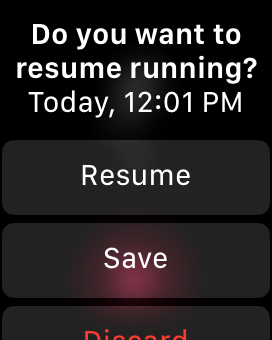

If you can not start the Watch app, it seems that the app has not been successfully installed.
Please try reinstalling the Watch app and restarting Apple Watch / iPhone.
If it occurs frequently, try restarting Apple Watch / iPhone.
Please use "Restore and Resume" after the app crash.
The cause is still being investigated, but we have confirmed many examples that are not caused by Zones app.
Possible causes are Apple Watch malfunction, watchOS bug, etc.
If the crash seems to be reproducible, it will be greatly appreciated if you can contact us via e-mail from Settings > Support > Feedback on iPhone app.
If Zones app terminated unexpectedly while measuring workout, You can resume workout by launching the app (Since Zones ver 1.3.0)
If it is within one hour from terminate, it will resume automatically.
If more than 1 hour has elapsed, the following will be displayed.

The restart button is displayed only within 2 hours from terminate.
The displayed time is the start time of the workout.
If you put the app in the Dock, Apple Watch itself automatically launches the application even if the app terminates unexpectedly.
Therefore, by staying in the Dock, you may be able to record more detailed data such as heart rate without missing.